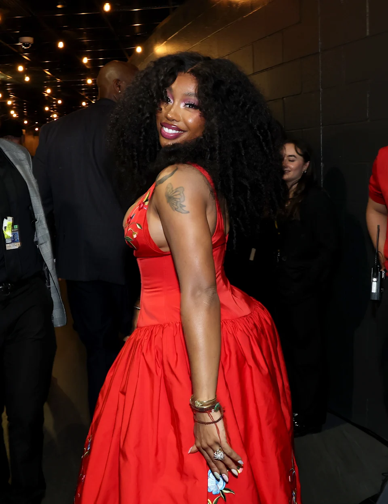

My Favorite Music Artist
By: Bella Pope

As you know, my favorite genres are pop, indie, and R&B. But as for my favorite artist, it's definitely SZA.
Sza is an american woman who is a singer and songwriter who blends r&B, hiphop, soul and other genres. Last May I was able to see her at Xcel Energy Center in Minneapolis where she performed with Kendrick Lamar.
She has three albums: CTRL, SOS, and LANA. Personally, my favorite album is SOS because it got me through some really hard times in high school.
Some of my Favorite Songs by SZA Ranked
- BMF
- FTF
- Open Arms
- Kill Bill
- Blind
- Honorable Mention: Ghost in the Machine